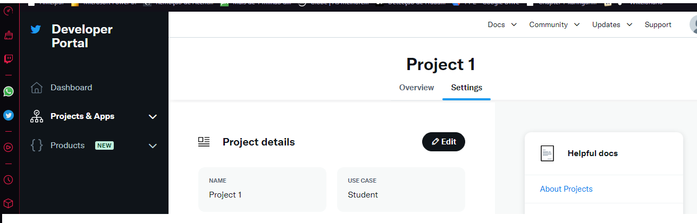
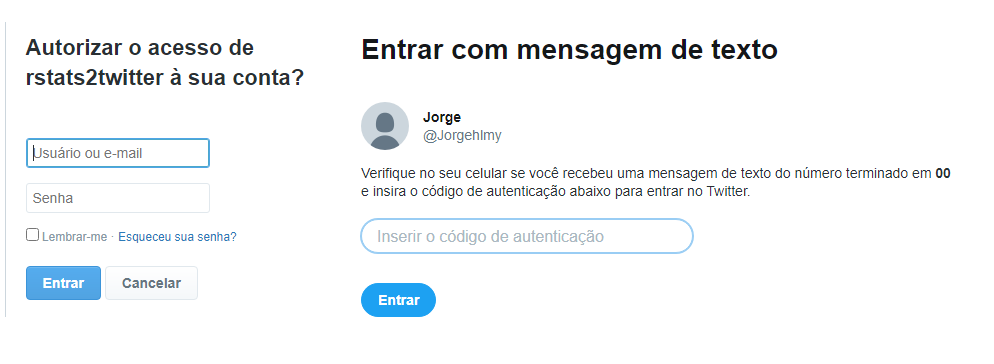
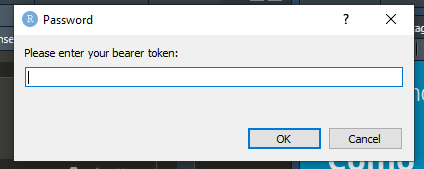
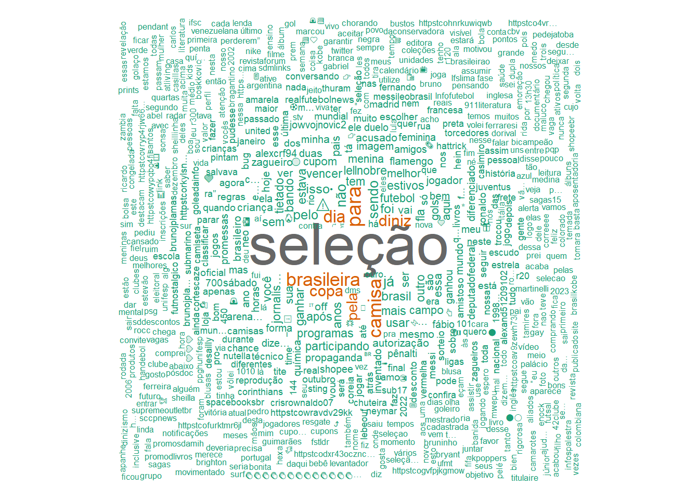
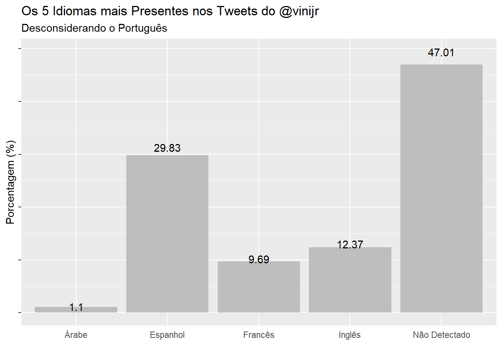

Introdução
API ou interface de programação de aplicação é basicamente uma ferramenta que estabelece uma comunicação entre sistemas. Nela é possível que realizar troca de informações de forma segura utilizando diferentes linguagens de programação.
O Twitter fornece API para consumo de dados para algumas lnguagem como python, R, entre outras. O R possui uma biblioteca específica para isso chamada rtweet (Kearney 2019).
Primeiros passos…
Inicialmente devesse criar uma conta no Twitter e em seguida criar uma conta de desenvolvedor na própria plataforma. Ao criar um projeto e um aplicativo serão geradas chaves de acesso para a requisição de dados via API.

Bibliotecas
Existem 3 formas simples de se fazer a autenticação:
Na função mencionada create_token basta inserir os argumentos fornecidos na hora de criar o app.
app
consumer key
consumer secret
access token
access secret
Caso tenha algum tipo de problema com o primeiro método, é possível utilizar a mesma função create_token sem argumentos. Neste caso você será levado a uma página de login do Twitter e um código de autenticação será enviado um código para o seu celular.

Outra opção é usar a função rtweet_app, nesse caso uma tela e será necessário fornecer a Bearer token.

Eu tive problemas com a primeiro e terceiro método de autenticação. Uma análise mais profunda da documentação do pacote possa revelar a solução mas na ausência de tempo escolhi o que funcionou sem ter nenhum erro.
A função create_token foi descontinuada a partir da versão 1.0.0 do pacote rtweet e a função rtweet_app é mais indicada para versão 1.0.2 .
Esse não é o caso mas existem API’s que são pagas, além do prejuízo financeiro, a ideia de terceiros utilizarem para fins duvidosos já causa preocupação. Caso interesse em disponizibilizar seus scripts existem métodos seguros para proteger senhas e chaves, mas como não é o foco dessa postagem tem esse blog.
Autenticando
twitter_token = create_token()
auth_as(twitter_token)Manipulações
Após a autenticação podemos iniciar nossas análises .
Com a função search_tweets ajuda a fazer busca por assuntos ou perfis. Podemos escolher o número de tweets, o idioma, entre outras opções.
Nesse caso trouxemos 3000 tweets com o assunto seleção.
selecao <- search_tweets("seleção", n=3000)Antes de fazer visualizações devemos fazer uma limpeza nos dados.
# Remove retweets e replies
selecao_tweets_organic <- selecao %>% filter(
retweeted == FALSE, is.na(in_reply_to_status_id)
)
# converte o tipo
selecao_tweets_organic$full_text <- as.character(
selecao_tweets_organic$full_text)
#selecionar só as colunas que serão utilizadasas
selecao_tweets_organic <-selecao_tweets_organic %>% select(created_at,full_text,retweet_count,favorite_count,display_text_range,lang)
# removendo palavras que não fazem sentido para análisese
selecao_tweets_organic$full_text <- gsub("com","",selecao_tweets_organic$full_text)
selecao_tweets_organic$full_text <- gsub("que","",selecao_tweets_organic$full_text)
selecao_tweets_organic$full_text <- gsub("pra","",selecao_tweets_organic$full_text)
selecao_tweets_organic$full_text <- gsub("blimag","",selecao_tweets_organic$full_text)
selecao_tweets_organic$full_text <- gsub("tô"""""selecao_tweets_organic$full_text))
selecao_tweets_organic$full_text <- gsub("por","",selecao_tweets_organic$full_text)
selecao_tweets_organic$full_text <- gsub("bolsonaro","",selecao_tweets_organic$full_text)
selecao_tweets_organic$full_text <- gsub("uma","",selecao_tweets_organic$full_text)
selecao_tweets_organic$full_text <- gsub("Bolsonaro","",selecao_tweets_organic$full_text)Uma nuvem de palavras é um tipo de visualização muito boa para dados textuais e para executar essa tarefa temos a biblioteca wordcloud nela podemos passar uma coluna de dataframe como dado de entrada.
set.seed(1234) # reprodutibilidadewordcloud(selecao_tweets_organic$full_text,
min.freq=5, scale=c(3.5, .5),
random.order=FALSE, rot.per=0.45,
colors=brewer.pal(8, "Dark2"))
Podemos fazer análises com base no horário em que o tweet foi criado.
selecao_tweets_organic$hora_criada <-lubridate::hour(selecao_tweets_organic$created_at)Em média qual horário teve mais Retweet, Favoritoe e Tamanho de Texto?
selecao_tweets_organic %>% group_by(hora_criada) %>%
summarise(round(mean(retweet_count)),
round(mean(favorite_count)),
round(mean(display_text_range))) %>%
kable(col.names = c("Hora","Retweet","Favorito","Tamanho do Texto"),caption = "Médias Referentes ao Assunto Seleção")o")| Hora | Retweet | Favorito | Tamanho do Texto |
|---|---|---|---|
| 0 | 417 | 0 | 119 |
| 1 | 173 | 2 | 133 |
| 2 | 91 | 1 | 126 |
| 3 | 169 | 0 | 131 |
| 4 | 241 | 1 | 133 |
| 5 | 123 | 1 | 124 |
| 6 | 148 | 1 | 134 |
| 7 | 124 | 14 | 138 |
| 8 | 223 | 3 | 134 |
| 9 | 87 | 14 | 139 |
| 10 | 81 | 6 | 131 |
| 11 | 91 | 34 | 129 |
| 12 | 195 | 44 | 126 |
| 15 | 176 | 4846 | 151 |
Escolhendo um perfil dessa vez. Aproveitando que é semana de champions escolhi o Vinícius Junior do Real Madrid.
vinijr <- search_tweets("@vinijr", n = 3000)Quais idiomas presentes nos tweets?
unique(vinijr$lang) [1] "und" "es" "en" "it" "ht" "fr" "pt" "in" "cy" "ar" "ca" "eu"
[13] "fi" "nl" "tl" "et" "lv" "no" "tr" Desconsiderando o português qual a porcetagem de presença dos tweets?
vinijr %>% filter(lang != "pt") %>%
group_by(lang) %>%
summarise(contagem=n()) %>%
arrange(desc(contagem)) %>%
slice(1:5) %>%
mutate(
langEx = case_when(lang =="ar"~"Árabe"",
lang =="es"~"Espanhol",
lang =="fr"~"Francês"",
lang =="en"~"Inglês"",
lang =="und"~"Não Detectado"",
)) %>%
mutate(Perc = round(contagem /sum(contagem)*100 ,2 )) %>%
ggplot(aes(x= langEx,y =Perc,label = Perc)) +
geom_col(fill ="gray") +
geom_text(position = position_stack(vjust =1.05),
color="#030202") +
labs(
title= "Os 5 Idiomas mais Presentes nos Tweets do @vinijr",
subtitle = "Desconsiderando o Português"", x=""",
y ='Porcentagem (%)') +
theme(axis.ticks.x=element_blank(),
axis.text.y =element_blank())
Conclusão
Embora eu tenha descartado a maioria das colunas, estou impressionado pelo volume de informação que a API disponibiliza para o usuário (43 colunas) um leque absurdo de análises que podem ser feitas. A parte mais complexa é estabelecer a conexão com a API mas uma vez feita basta se atentar no tempo de validade das chaves.